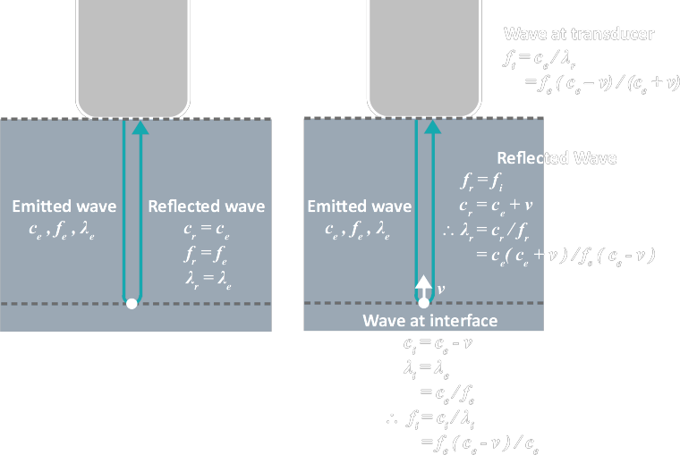

| Sound Wave Properties |
1. Temporal
$$
\begin{align}
\omega &= 2\pi f \\
&= { 2\pi \over T }
\end{align}
$$
where
\(\omega\) = angular frequency (radians per s)
\( f \) = wave frequency |
|
2. Spatial
\[ k = {2\pi \over \lambda} \]
where
\(k\) = wavenumber (radians per m)
\(\lambda\) = wavelength |
|
|
3. Speed
$$
\begin{align}
c &= f \lambda \\
&= {\omega \over k}
\end{align}
$$
where
\( c \) = wave speed
|
|
| Acoustic Velocity (c) |
Sound wave speed depends on material physical properties
\[ c = \sqrt{\kappa \over \rho} \]
where
\(\kappa\) = bulk modulus of elasticity
(stiffness) = \( \large \frac{P}{\Delta V/V} \) \(\rho\) = density i.e. density ↑, c ↓
Relationship with Frequency \[ c=f~\lambda\]
where
c = constant in a particular medium
\(c,~f,~\lambda\) NOT intensity dependent |
| Intensity (I) | $$ \begin{align} I &= {Average~P \over cross~section~A} \\ & \propto Wave~Amplitude^2 \\ &= (mW cm^{-2}) \end{align} $$ |
| Decibel (dB) |
\[ dB = 10~log\left( {I \over I_0} \right) \]
where
I = Intensity of a point
\(I_0\) = Reference Intensity |
| Intensity Attenuation |
\[ Loss (dB) = \mu f x \]
where
μ = intensity attenuation coefficient (dB cm-1 MHz-1)
medium specific
f = sound frequency x = distance travelled ∴ f ↑ → ↑dB loss |
| Acoutic Impedance (Z) |
\[ Z=\rho~c\]
unit: (kg m-2 s-1 )
|
| Doppler Effect | \[ f_{doppler} = {2~f~v~cos\theta \over c_0} \] |
| Layers |
Matching Layer
↑ intensity transmitted
e.g. Al in epoxy resin Piezoelectric Material
= dipole crystal
e.g. PZT ceramic (lead zircronate titanate) PVDF plastic (polyvinyldifluoride) quartz Backing Layer
↑ damping
↓ ringing ↓ pulse length ↑ spatial resolution ↓ reflection back to crystal e.g. tungsten powder in epoxy resin |
| Reflection |
|
| Artefact |
Assumptions
Common artefacts
→ false structure |
| Safety |
← microscopic interaction
|
| Pulse Parameter |
Spatial Pulse Length (SPL)
= the length a pulse occypied (mm)
\[ Axial~Resolution = \frac{SPL}{2} \] ↑ SPL, :( axial resolution Pulse Repetition Period (PRP)
= time for an echo to travel 2 × depth
Pulse Repetition Frequency (PRF)
= sampling frequency
i.e. \( Nyquist~Frequency = \frac{PRF}{2} \) $$ \begin{align} PRF &= \frac{1}{PRP} \\ \\ &= \frac{c}{2~depth} \end{align} $$ Duty Factor (DF)
\[ DF = \frac{Pulse~Duration}{Pulse~Repetition~Period} \]
Frame Rate
Every Line of Sight emits a pulse
→ to construct a frame \[ FR = \frac{PRF}{N} \]
where
N = line of sight per frame
|
| Near Field / Far Field |
d = transducer size Depth of Near Field ( = Focal Length) \[ D = \frac{d^2}{4 \lambda} \] Far Field Angle \[ sin \theta = 0.6 \frac{\lambda}{d} \] Beam width ↓ of focused transducer
|
| Time Gain Compensation (TGC) |
| used to increase brightness of deeper tissue :( ↑gain, ↑noise |
| Image Quality |
↑ f
↑ attenuation ↓ SPL :) axial spatial resolution
↓ PRF, ↑ depth
↓ Q
:) axial spatial resolution
↓ SPL
:) axial spatial resolution
→ lateral spatial resolution ← the point of measurement is in near/far field
← elevation
↑ frame rate
:) temporal resolution ✓ frame average :( temporal resolution
↑ LS
:) lateral spatial resolution :( temporal resolution
↑ FOV depth/width
:( temporal resolution
↓ contrast resolution
↓ side lobes
↑ contrast resolution
|
| Elastography |
| Acoustic Properties (particle level) |
1. Particle Displacemen, velocity |
|
2. Acoustic p, \(\rho\), T \[ p' = p_0 + p \] \[ {\rho}' = {\rho}_0 + \rho \] \[ T' = T_0 + T \]
where
p = Pressure
\( \rho = density \) T = Temperature |
|
|
3. Energy, Intensity, Power
Energy (J)
Power (W) Intensity (mW cm2) |
|
| Wave Equation |
\[ {1 \over c_0^2} {\partial^2 \over \partial t^2} p = \left( {\partial^2 \over \partial x^2} + {\partial^2 \over \partial y^2} + {\partial^2 \over \partial z^2} \right) p \]
\[ \left( {1 \over c_0^2} {\partial^2 \over \partial t^2} - \nabla^2 \right) p = 0 \]
Derivation
1. Continuity Equation (conservation of mass)
|
| Doppler Equation | Static Ultrasound Source, but Moving Reflector \[ f_{doppler} = {2~f~v~cos\theta \over c_0} \]  $$ \begin{align} f_e - f_t &= f_e - { f_e (c_e - v) \over (c_e + v) } \\ &= {f_e (c_e + v) - f_e (c_e - v) \over c_e +v} \\ &= {f_e (c_e + v - c_e +v) \over c_e+v} \\ &= { 2 f_e v \over c_e + v } \\ \textrm{When}~v~{\ll}~c_e, \\ \Delta f &= {2 f_e v \over c_e} \end{align} $$ |